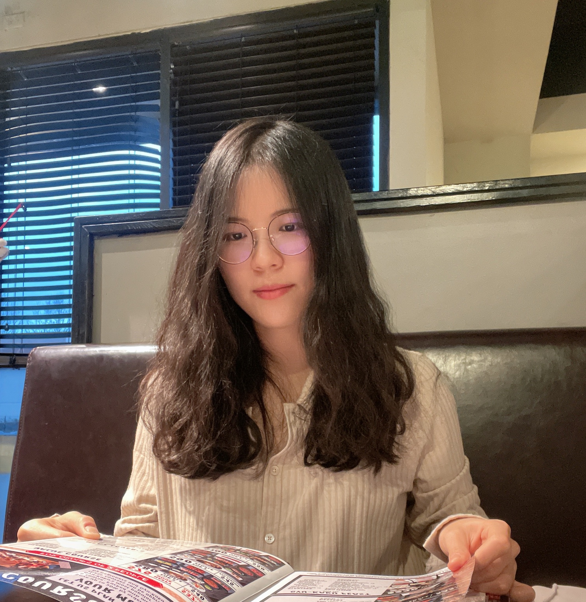

Yuying Ge 葛玉莹Ph.D. Candidate
Dept. of Computer Science
|
 |
Biography
I am currently a fourth-year (2019-now) Ph.D. student in the Department of Computer Science, the University of Hong Kong,
under the supervision of Prof. Ping Luo. I am also a visiting student at UCSD,
working with Prof. Xiaolong Wang. Before that, I received bachelor's degree in Communication Engineering
at University of Electronic Science and Technology of China (UESTC) in 2018, ranking 1/525. My research interests include computer vision, deep learning,
with recent focus on large-scale multi-modality pre-training and its applications.
News
- [07/2022] One paper was accepted by ECCV 2022.
- [03/2022] One paper was accepted by CVPR 2022 as oral.
- [11/2021] One paper was accepted by IEEE TIP.
- [03/2021] Two papers were accepted by CVPR 2021.
- [03/2019] One paper was accepted by CVPR 2019.
Publications
|
Learning Transferable Spatiotemporal Representations from Natural Script Knowledge,
Ziyun Zeng*, Yuying Ge*, Xihui Liu, Bin Chen, Ping Luo, Shu-Tao Xia, Yixiao Ge arXiv preprint, 2022 [paper|code] |
|
 |
MILES: Visual BERT Pre-training with Injected Language Semantics for Video-text Retrieval,
Yuying Ge, Yixiao Ge, Xihui Liu, Alex Jinpeng Wang, Jianping Wu, Ying Shan, Xiaohu Qie and Ping Luo European Conference on Computer Vision (ECCV) 2022 [paper|code] |
 |
Bridging Video-text Retrieval with Multiple Choice Questions,
Yuying Ge, Yixiao Ge, Xihui Liu, Dian Li, Ying Shan, Xiaohu Qie and Ping Luo IEEE/CVF Conference on Computer Vision and Pattern Recognition (CVPR) 2022 (oral) [paper|code|project] |
 |
MetaDance: Few-shot Dancing Video Retargeting via Temporal-aware Meta-learning,
Yuying Ge, Yibing Song, Ruimao Zhang and Ping Luo arXiv preprint, 2022 [paper|demo] |
 |
MetaCloth: Learning Unseen Tasks of Dense Fashion Landmark Detection from a Few Samples,
Yuying Ge, Ruimao Zhang, and Ping Luo IEEE Transactions on Image Processing (TIP) 2021 [paper] |
 |
Parser-Free Virtual Try-on via Distilling Appearance Flows,
Yuying Ge, Yibing Song, Ruimao Zhang, Chongjian Ge, Wei Liu, and Ping Luo IEEE/CVF Conference on Computer Vision and Pattern Recognition (CVPR) 2021 [paper|code] |
 |
DeepFashion2: A Versatile Benchmark for Detection, Pose Estimation, Segmentation and Re-Identification of Clothing Images,
Yuying Ge, Ruimao Zhang, Xiaogang Wang, Xiaoou Tang, and Ping Luo IEEE/CVF Conference on Computer Vision and Pattern Recognition (CVPR) 2019 [paper|dataset] |
Teaching
HKU COMP3340 Applied Deep Learning
HKU COMP3250 Design and Analysis of Algorithms
Experiences
Research Assistant in Multimedia Lab (MMLab), The Chinese University of Hong Kong, 2018-2019
Intern in SenseTime, 2017-2018
Academic Activities
Organizer of DeepFashion2 Challenge Clothes Landmark Detection
and Clothes Retrieval in 2019, 2020
Organizer of Third Workshop on Computer Vision for Fashion, Art and Design in CVPR, 2020
Organizer of Sencond Workshop on Computer Vision for Fashion, Art and Design in ICCV, 2019
Honors and Awards
Outstanding Graduates of Sichuan Province, 2018
National Scholarship, 2015-2016
National Scholarship, 2014-2015
© Yuying Ge | Last updated: Dec. 2021